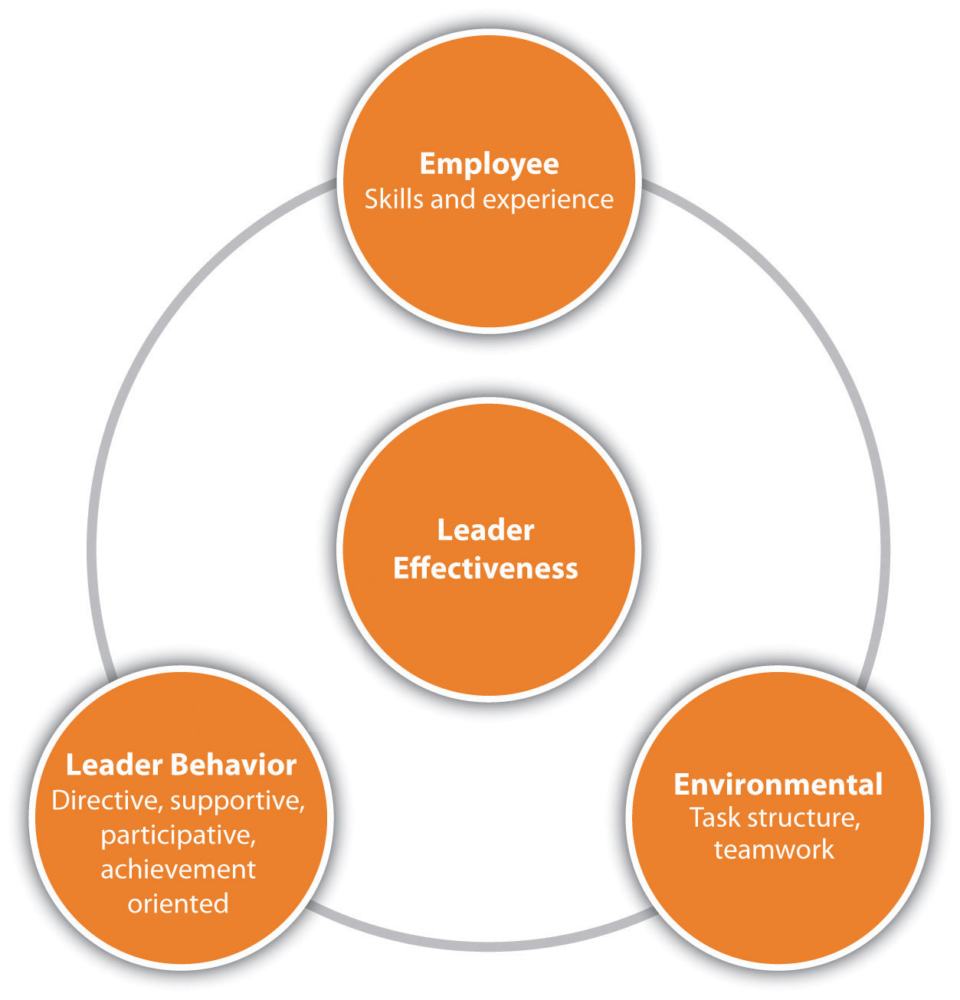
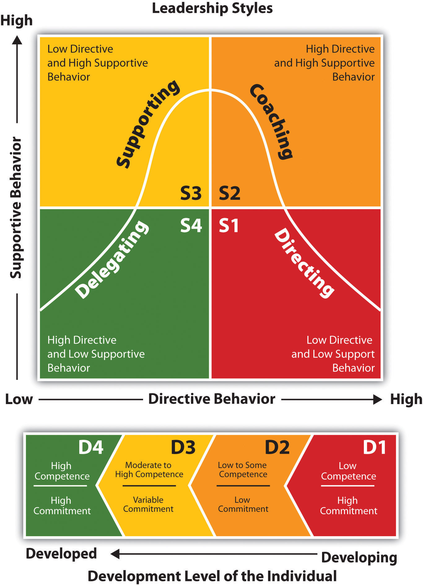

As we saw in the opening case, most managers will use a variety of management styles depending upon the situation. In our scenario, Sam obviously may have gone too far in his use of management style. As we will discuss in this chapter, there are several management styles that can be used in a variety of situations. As you read this chapter, consider past managers and think about what style they may have used. Understanding management styles can help us become better managers or prepare us to take on the role of manager someday. In addition, understanding your manager’s style can be beneficial to know—as it can help you relate to him or her better.
Management style ties in very closely with communication style. There isn’t necessarily one management style that is better than another; they are simply different and might be used in a variety of situations.
When we look at the styles of management, we see that most styles fall into one of two categories: a task-oriented management style or a people-centered style.
A manager with a task-oriented styleA management style that tends to focus on the details of what must get done. will focus on the technical or task aspects of the job. The concern for this manager is that employees know what is expected of them and have the tools needed to do their job.
A people-orientedA management style mostly concerned with the interpersonal relationships within the organization. style is more concerned with the relationships in the workplace. The manager emphasizes the interpersonal relations, as opposed to the task. The manager is most concerned about the welfare of the employee and tends to be friendly and trusting.
Understanding these two main differences in management style, we will now look at other possible styles a manager might use.
Utilization of a participatory management styleA management style that focuses on task-centered and people-oriented styles. This style is supportive. involves both a task-oriented style and a people-centered style. This style emphasizes how the employee’s assigned task fits into the bigger picture. This style will provide support and input where needed. As a result, the focus is on the task but also on the person and the relationships required to get the task done. This style might be used when the employees are experienced and the deadlines reasonable enough to provide the time needed to focus both on the task and the person. If more hands-on management is required,“Three Effective Management Styles,” Dun & Bradstreet Credibility Corp., 2010, accessed February 5, 2010, http://smallbusiness.dnb.com/human-resources/workforce-management/11438-1.html. a directing management styleA management style in which the manager tends to direct rather than allow for feedback. might be appropriate. Consider a very tight deadline or an emergency situation in which someone needs to be calling the shots. For example, assume you own a business that creates specialty home-baked dog treats. You just received an order for one hundred dog cookies by later this afternoon. You might consider using a directing style with your employees to make sure it gets done on time. This style doesn’t focus on the person but rather on getting the task done; hence it tends to be more of a task-oriented style.
A manager who uses a teamwork management styleA highly people-centered approach to management in which relationships are most important. believes there is a value (or necessity) in having people work in teams. As a result, this style tends to require a people-centered approach. Relationships are most important, and assuming the individuals work well together, the task will be successfully accomplished. The advantage to this style, given the type of task and situation, is that as a manager you are able to pool resources and abilities from several different people. Use of a team style can also provide big benefits for the company. For example, Google uses a teamwork approach it calls “groupletsA specific teamwork management style approach used by many organizations..” Google believes that individuals should be able to spend time on something that interests them and is also company related. Engineers at Google spend 20 percent of their time on this endeavor. As a result, grouplets are formed, and the grouplet works on their idea with no specific budget. Some of the best ideas from Google have come through this teamwork process. Gmail, in fact, was developed using a grouplet.Bharat Mediratta, as told to Julie Bick, “The Google Way: Give Engineers Room,” New York Times, October 21, 2007, accessed February 15, 2010, http://www.nytimes.com/2007/10/21/jobs/21pre.html.
An autocratic styleA management style that takes a task-only focus and tends to make most of the decisions for the department. of management involves the task-oriented style. The focus is on getting things done, and relationships are secondary. This type of manager tends to tell people what to do and takes a “my way or the highway” approach. Another description for this type of manager is a taskmaster. This person uses his or her authority and makes all the decisions as to who does what, how it is done, and when it should get done.
On the other hand, a participative styleA management style that seeks input from employees. constantly seeks input from the employees. Setting goals, making plans, and determining objectives are viewed as a group effort, rather than the manager making all the decisions.
At the other extreme, a free-rein styleA management style that gives employees freedom to make decisions. gives employees total freedom to make decisions on how things will get done. The manager may establish a few objectives, but the employees can decide how those objectives are met. In other words, the leader tends to be removed from the day-to-day activities but is available to help employees deal with any situation that may come up.
The path goal theory says that the role of a leader is to define goals and lay down the path for the employees to meet those goals. Aspects include clarification of the task and scope of the process. Clarification of the employee’s role and clarification around how the success of the task will be measured are key aspects in this model. The leader also is involved in guidance and coaching surrounding the goal and removes obstacles for employees that might affect the completion of the task. The path goal theory says that if employees are satisfied by the leadership style, they will be motivated toward the goals of leadership. Part of the model also stresses that the skills, experience, and environmental contingencies of the job play a role in the success of the leader.
Figure 12.1 Path Goal Model for Leadership
It is great to talk about management style, but the application of that management style is just as important as knowing the management styles. In this section, we will discuss how and when you might use each style when managing people. If you aren't managing people yet, consider the style your current (or past) manager uses. Do you think it is effective based on our discussion?
Another way we can view leadership is through the situational leadership modelA method of viewing the application of management styles, as developed by Ken Blanchard..Ken Blanchard, Patricia Zigarmi, and Drea Zigarmi, Leadership and the One Minute Manager (New York: HarperCollins Entertainment, 2000). This model, developed by Ken Blanchard (author of the One Minute Manager series of books), does a good job explaining how we might use one type of management style versus another.
The model looks at three areas: the relationship behavior of the manager, the task behavior of the manager, and the readiness of employees. The relationship behavior means how supportive the manager needs to be in helping employees. Task behavior refers to the type of style the manager should use when managing employees based on their readiness level. Readiness includes the willingness and skills to perform the task at hand. Depending on where the employees fall in each of these areas, a manager might use a different style:
Based on the readiness and commitment of the employee, the leader can see what management style and level of support the employee should experience:Situational Leadership Grid, Chimaera Consulting, 2008, accessed February 4, 2010, http://www.chimaeraconsulting.com/models.htm.
The bottom line when discussing management style is that no one style works best in all situations. We may be more comfortable with one style versus another, but we need to change our management style depending on the person and task we are working with. For example, if you have an employee who is brand new, you will likely work with that person using a more directive style. As she develops, you might change to a participative style. Likewise, someone who does good work and has lots of experience may prefer a free-rein style. Many managers make the mistake of trying to use the same style with every person in every situation. To be a great manager, we must change our styles based on the situation and the individual involved.
Figure 12.2 Blanchard’s Situational Leadership Model
How does this relate to human relations? First, how people are managed is one of the most important aspects to motivation in any organization. Understanding "good" management and "not so good" management can help develop us for when we are placed in management positions, if we aren't already.
This video discusses several ways to deal with a poor manager.
This video gives some tips on how to deal with a bad manager.
Some managers are bullies. This video gives some examples on how to handle this type of boss.
What combinations of management style might you use in each of these situations and why?